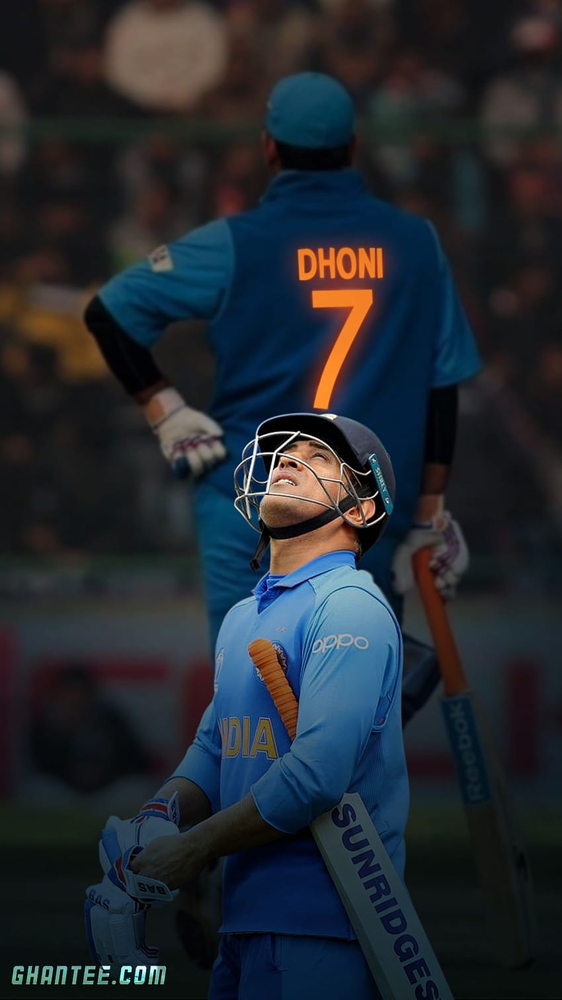

(Thala for a reason)

Mahendra Singh Dhoni (born 7 July 1981) is an Indian professional cricketer.He is a right handed batter and a wicket-keeper.
Widely regarded as one of the most prolific wicket-keeper-batsmen and captains, he represented the Indian cricket team and was the captain of the side in limited-overs formats from 2007 to 2017 and in test cricket from 2008 to 2014.
Dhoni has captained the most international matches and is the most successful Indian captain. He has led India to victory in the 2011 Cricket World Cup, the 2007 ICC World Twenty20 and the 2013 ICC Champions Trophy, the only captain to win three different limited overs tournaments. He also led the teams that won the Asia Cup in 2010, 2016 and was a member of the title winning squad in 2018.
Born in Ranchi, Dhoni made his first class debut for Bihar in 1999. He made his debut for the Indian cricket team on 23 December 2004 in an ODI against Bangladesh and played his first test a year later against Sri Lanka. In 2007, he became the captain of the ODI side before taking over in all formats by 2008.
Dhoni retired from test cricket in 2014, but continued playing in limited overs cricket till 2019. He has scored 17,266 runs in international cricket including 10,000 plus runs at an average of more than 50 in ODIs.
Dhoni plays for Chennai Super Kings in the IPL, leading them to the final on ten occasions and winning it five times (2010, 2011, 2018, 2021 and 2023). He has also led CSK to two Champions League T20 titles in 2010 and 2014. He is amongst the few batsmen to have scored more than five thousand runs in the IPL, as well as being the first wicket-keeper to do so.
In 2008, Dhoni was awarded India's highest sport honor Major Dhyan Chand Khel Ratna Award by Government of India. He received the fourth highest civilian award Padma Shri in 2009 and third highest civilian award Padma Bhushan in 2018. Dhoni holds an honorary rank of Lieutenant Colonel in the Parachute Regiment of the Indian Territorial Army which was presented to him by the Indian Army in 2011. He is one of the most popular cricketers in the world.
For more information check out on Wikipedia...